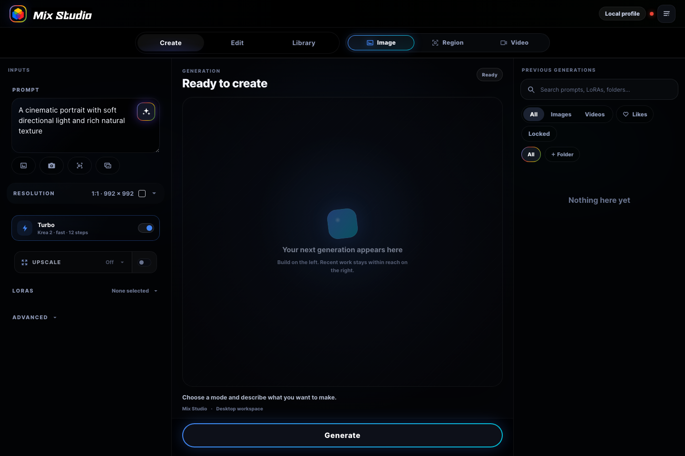
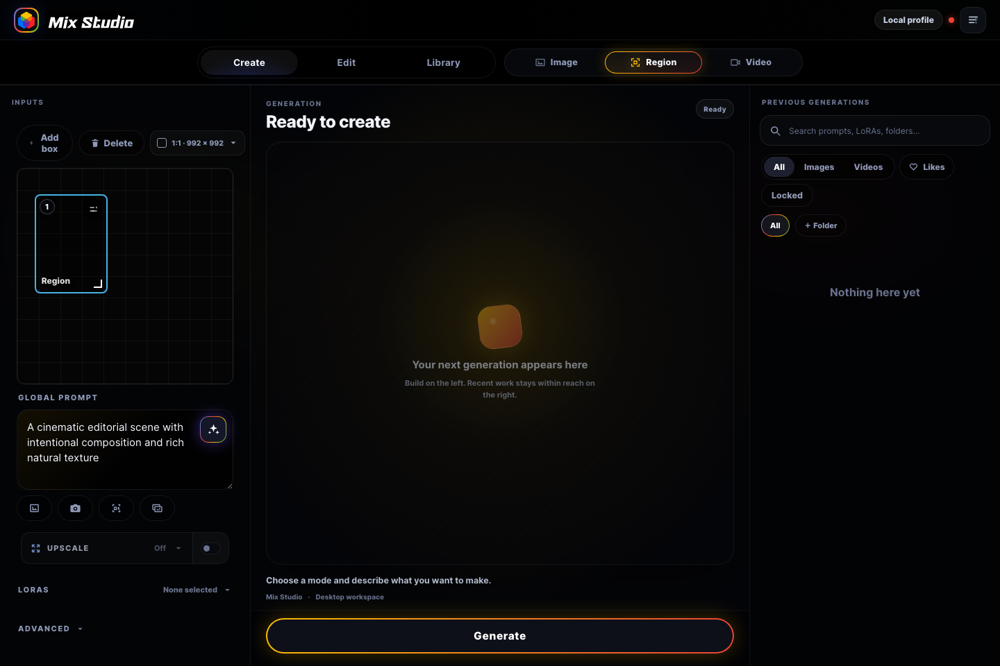
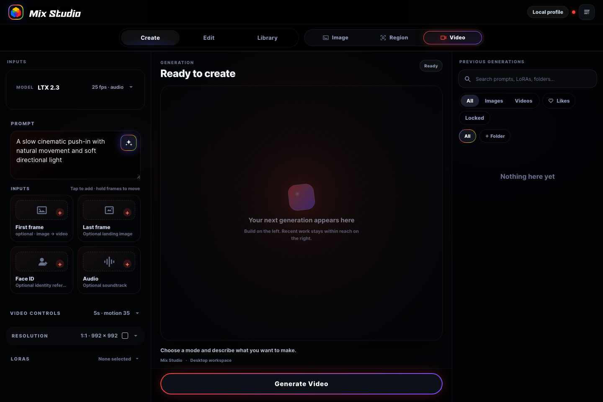

Create images
Generate with Krea 2, pixel or depth guidance, depth-map previews, LoRAs, camera controls, prompt assistance, and finish upscaling.

Windows · NVIDIA · Local generation
A focused workspace for creating images, making precise edits, generating video, and organizing everything your local ComfyUI can produce.


A different local AI workflow
Most local generation tools assume you are sitting at the desktop. Mix Studio is designed so the desktop can stay with the GPU while the interface goes wherever you do.
Made for the phone in your hand
Mix Studio turns advanced local workflows into clear, touch-friendly controls while keeping the full power of your desktop ComfyUI installation underneath.
Generate with Krea 2, pixel or depth guidance, depth-map previews, LoRAs, camera controls, prompt assistance, and finish upscaling.
Use references, masks, smart selection, camera-angle variants, sequential edits, and Continue Edit across Klein, Qwen, and Krea models.
Lay out multiple prompt regions, references, and LoRAs visually for deliberate compositions in a single generation.
Work with LTX, Wan, 10Eros, and SCAIL using frames, Face ID, your own audio for lipsync, motion transfer, and interpolation.
Send images through SeedVR2 or Ultimate SD profiles and process completed videos without leaving the library.
Search, like, group, compare, continue editing, document, and export generations in a focused mobile or full desktop library.
The workspace
On desktop, inputs, live generation progress, and recent work stay visible together. On mobile, the same controls settle into a focused single-column flow.
Build on the left, watch progress in the center, and keep recent generations within reach.

Draw, overlap, and configure prompt areas directly on the output canvas.

Frames, identity, lipsync audio, model, and motion controls stay together in one clear flow.
Quick start
The Windows installer prepares the generation machine. Tailscale turns its Mix Studio address into a private studio you can carry.
Use Windows 10 or 11 with an NVIDIA GPU, current drivers, and enough SSD space. The wizard can install ComfyUI Desktop and explains before any large model download begins.
Save install.bat from this page and open it. Windows may ask you to confirm keeping or running an executable script.
Choose a new official ComfyUI Desktop installation or an existing environment, then select the image, edit, and video families you want. Image setup includes depth guidance, and LTX setup includes Face ID support.
Install Tailscale on the Windows desktop and your phone, then sign in to the same private network.
Start Mix Studio on the desktop and open the labeled Tailscale: URL shown in its terminal. Add it to the phone's home screen for an app-like launch.
Transparent by design. The bootstrap retrieves the public BlackMixture/Mix-Studio repository, the signed official ComfyUI Desktop installer, and reviewed model or node sources selected in the wizard. Existing settings are preserved, and the included uninstaller leaves ComfyUI and shared models in place.
Desktop power, mobile freedom
One download prepares the desktop. Your phone becomes the focused interface for generating, reviewing, and reusing work wherever your private network reaches.